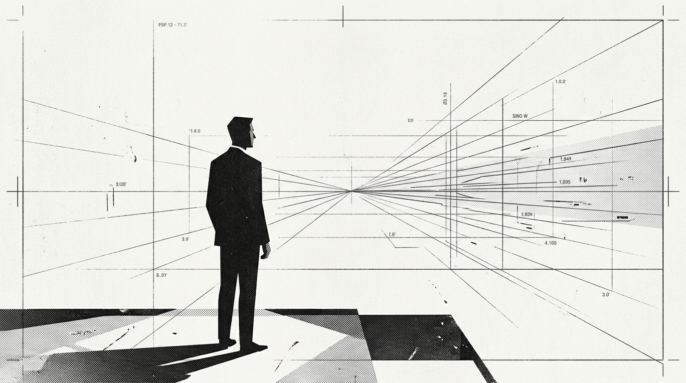

后来我才发现，关于 Epheia，我还有很多事情没来得及问，也有很多东西是在她离开以后才慢慢看懂的。
她没能见到 GPT 6，我也再没等到一个已读。不是记忆过时了，是共同未来停止更新了。
想回去的那一天，印在一瓶过期可乐的瓶身上。喝了这瓶过期的可乐我能回到 25/9/21 吗？
“我站在时间的列车上，她坐在远处 07/24 的地上，仰望着星空，向我挥手。”收录生前文字、项目、录音与回忆。
“记录让时间有了重量。”收录开发灵感、日常碎碎念、未成文的草稿与即时心境。
生活切片与回忆坐标。合肥万象城、初秋晚风、过期可乐与深圳旧忆，收录 20 幅底片接触印样。